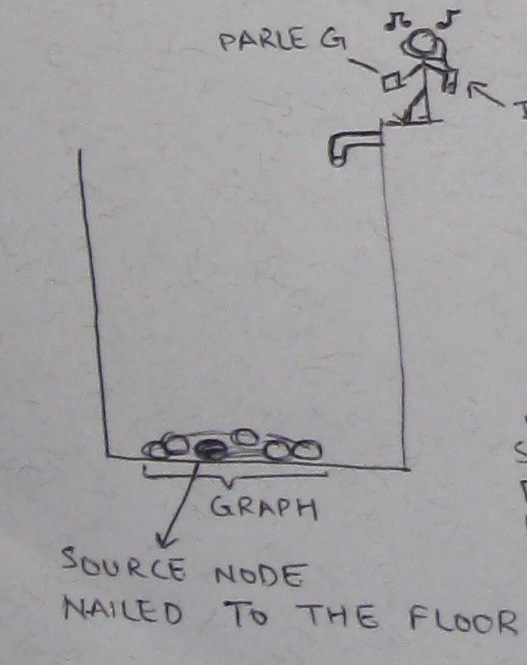
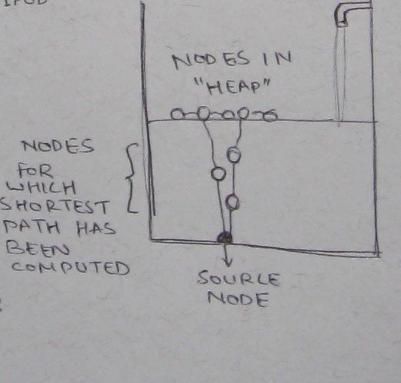
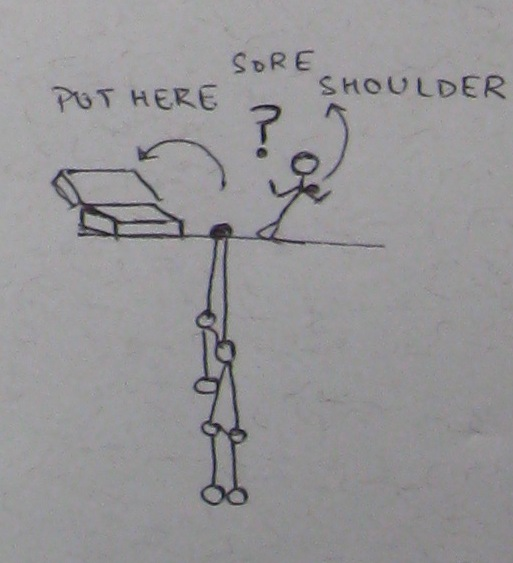

I recently (again) came across
Bead Sort. If you don't already know it, I recommend that you at least read the
wikipedia article. After the initial awe and wonder, you start to see that it's not something very special, i.e., an actual implementation of it would not look very different from
bucket sort and O(1) complexity seems like a hoax. However, what if there were machines that actually stored data in form of beads on an abacus? It would be pretty stupid to build a machine like that since simple operations like inserting numbers, changing numbers may be insanely expensive, but that machine *will do* sorting in O(1) time! (If you want to nit pick, the beads will take a finite amount of time to fall down)
 
Hence the wonder-machine can apply Dijkstra in O(1), by just letting the graph hang from the source node. However, once we are done, we would need to "collect" the graph back. Imagine the following scene:

That is, Shaktimaan is sitting at the top, and he has to pull up nodes hanging below one by one and put all the graph in the box. Also, let us assume that shaktimaan recently has a distal clavicle resection of the shoulder and is unwilling to reach too far down irrespective of the amount of Parle G's fed. In that case, the optimal strategy for him is to retrieve the node that is closest to him, and keep doing it iteratively till the whole graph is retrieved (which is guaranteed for a connected graph). Actually this exactly simulates the
Prim's algorithm, and the order of fetching the nodes corresponds to the Minimum Spanning Tree. Yeah, not as cool as the Bead Sort, but then I would not have written it here but in a
paper. But I like to keep pictures like these in mind, when implementing these algorithms.